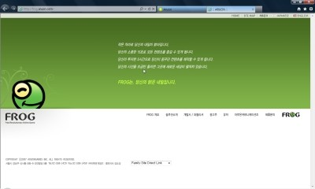

아루온 프로그 기술유출소송...아루온을 좋아하는 사람으로서 하도 재판결과가 궁금해서 대법원 사이트에 가서 판결문제공신청을 해봤다. 아루온이 홈페이지 공지사항을 통해 재판 사건번호를 알려준 덕분에 판결문 제공신청이 가능했다. 1심과 2심 판결문을 모두 받아보았다. 결과부터 말하면 1심은 아루온 패소, 2심은 아루온 승소인데 판결 요지를 읽어보니 이제껏 몰랐던 새로운 사실을 많이 알 수 있었다. 사건 발생 직후 프로그 무료서비스를 중단하고 전 게임 유료서비스로 전환, 이후 홈페이지 업데이트 전무, 서버 장기간 먹통까지 발생, 아루온에 무슨 일이 일어났던 걸까.
만트라에 이어 아루온까지, 일편단심 팔콤사랑이신 김도성 사장님, 일본 팔콤사 전 대표 야마자키 신지 사장님과도 돈독한 관계를 갖고 있었던 그분은 2005년 6월 주식회사 아루온게임즈를 설립, 구루민을 마지막으로 한국과 인연이 없었던 팔콤 게임의 국내시장 유통을 다시한번 추진하게 된다. 김사장은 2007년 3월 현대차에서 근무하던 시절 알게되어 이후 아루온에 투자를 해오던 임모씨를 정식으로 영입해 같이 사업을 시작했다. 임씨는 아루온게임즈의 자회사이자 일종의 서류상 회사인 아루온커뮤니케이션즈의 사장이 되어 아루온의 영업과 재무 쪽 업무를 맡았다. 물론 두 회사 모두 실소유주는 김도성 사장.
초기 팔콤 게임들의 라이센스를 획득해 유료 서비스를 해오던 아루온은 2006년 들어 모 게임회사가 개발한 WDP솔루션을 도입해 영웅전설 천공의 궤적 FC에 적용시켰다. WDP솔루션은 아루온의 게임을 TV의 영상처럼 스트리밍시켜 보여주는 기술로, 이 기술을 접목하면 게임소스코드의 수정 없이도 게임 도중에 화면에 CF영상을 송출하는 것이 가능해진다. 아루온은 이 WDP기술을 개발한 기술이사 이씨를 아루온에 영입하여 게임 도중에 광고가 나오게 하는 신 솔루션 '프로그 1.0' 을 개발해 영웅전설을 비롯한 팔콤게임의 무료서비스를 시작했다. 이로써 아루온은 불법복제로 사실상 붕괴된 것이나 다름없는 패키지pc게임 시장에서 무료서비스로도 수익원을 창출할 수 있는 기발한 아이디어를 발굴한 셈이 되었다. 아루온은 여기에 더해 게임 이용자의 성향에 따라 맞춤광고가 나오게 하는 타게팅 기능을 추가한 '프로그 2.0'의 개발을 완료하게 된다.
아루온은 2007년 말 들어 본격적으로 이 프로그의 해외수출을 타전하기로 하고 중국의 모 게임개발업체와 공동사업계약을 추진했다. 공동사업계약서가 만들어졌고, 이듬해인 2008년 기술이사의 주도하에 프로그 솔루션이 팔콤게임뿐만 아니라 다른 모든 종류의 온라인게임에도 적용되도록 범용성을 갖춘 프로그 SDK라는 이름의 클라이언트가 개발되었다. 아루온은 이 새로운 프로그를 중국회사가 서비스하던 온라인게임에 테스트를 해본다. 그런데 여기서 문제가 일어난다. 아루온이 애써 만든 프로그SDK가 중국의 온라인게임에서 실행이 되지 않는 버그가 발생한 것이다. 기술이사가 몇 차례 중국에 건너가 버그수정을 했지만 이번에는 프로그 때문에 게임이 실행되지 않는 문제가 일어났고 급기야 중국쪽에서 "프로그SDK가 모든 온라인게임에서 적용되는 것이 맞느냐"고 공식항의하게 되었다.
실제 프로그는 아루온이 서비스하던 일본 팔콤사 게임 외에 다른 게임에서도 돌아가는지에 대해서는 충분히 검증이 되지 않은 상태였다. 사실 아루온이 서비스하던 게임에서도 3D그래픽 형태의 영웅전설, 이스 오리진같은 게임에서는 프로그가 돌아가는 반면 2D였던 '신영웅전설 4 주홍 물방울'에서는 프로그적용이 안되어 무료서비스없이 유료결제서비스만을 계속해서 하고 있는 상태였다. 팔콤 게임 외에서는 정상작동이 보장되지 않는 프로그의 한계가 드러난 것이다.
아루온과 협약을 맺었던 이 중국회사는 이후 계약금지급을 차일피일 미루게 되고, 아루온이 추진하던 다른 해외진출사업건도 여러가지 이유로 이후 계약이 무산된 것으로 보인다. 아루온은 2007년 말엽 들어 재정적인 어려움에 부딪치게 되었고, 회사 내에서 김도성 사장과 직원들 사이에 회사의 운영방향과 자금활용방안을 놓고 의견다툼이 빈번해졌다고 판결문상에 나온다. 여기서 충격적이었던게, 아루온이 프로그(2.0버전)를 통해 얻은 광고수익이 불과 500만원 정도에 그쳤고, 단발성 광고 외에는 투자유치가 전무한 실상이었다고 하는 점이다. 아루온은 2007년 10월경 국내 한 게임회사가 개발한 티크루라는 온라인게임의 광고대행업무를 맡아 홈페이지에 티크루의 배너를 띄우기도 했는데, 온라인게임을 서비스하는 회사가 다른 회사가 운영하는 온라인게임 광고를 띄워야 했을 정도였던것을 생각하면 이무렵 아루온의 회사사정이 매우 안좋아졌던 것을 추측해 볼 수 있다. 이 티크루 광고를 2차에 걸쳐 수주함으로써 얻은 수익이 약 1억원에 가까웠음을 생각하면 기존 프로그의 광고단가는 참으로 실망스러운 수준이었던 셈이다.
아루온으로서는 더이상 가망이 없다고 생각한 것일까, 결국 아루온커뮤니케이션즈 대표 임씨와 전략기획부장 정모씨를 필두로 이 사건의 피고인 7인은 2008년 들어 모두 비밀준수서약서를 쓰고 회사를 떠나게 된다. 언론에 알려진 대로 아루온 직원이 10명 내외였다는 점과 퇴사한 직원들이 아루온의 마케팅, 기획, 재무관리 등 핵심 역할을 맡았다는 점을 생각해보면 이들의 이직은 그 자체만으로도 치명적이었다고 볼 수 있다. 이들 중 5인은 회사를 떠나기 전 프로그 SDK를 비롯한 아루온의 각종 영업비밀과 개발관련자료가 들어있는 기술이사의 업무용pc 하드디스크를 그들이 차린 새 회사로 반출하기로 모의한다. 아루온 기술이사의 업무용 컴퓨터는 김도성 사장의 사무실에 있었는데, 기술이사는 평소 자신의 개인 노트북을 업무용 pc와 동기화시켜 재택근무를 주로 했고, 사장 집무실은 따로 금고에 자료를 보관하지도 않았고 직원인이상 출입에 비밀번호와 같은 특별한 제한이 없어 마음만 먹으면 얼마든지 자료 반출이 가능했다. 이들은 자정을 넘긴 한밤중에 회사 사옥을 방문해 기술이사의 하드디스크를 일행 중 한명이 소지한 하드디스크에 통으로 복제한다. 김도성 사장에게 이 사실을 비밀로 한 것은 물론이다. (2심의 검사측 공소장변경 내용에 따르면 이 하드디스크에는 프로그뿐만 아니라 이스, 영웅전설 등 팔콤 게임의 소스코드도 있었던 것으로 추측된다.) 재판 과정에서 피고인들은 기술이사가 2008년 4월까지만 아루온에 있겠다는 말을 해서 그의 퇴사 또는 무단잠적가능성을 대비해 자료를 백업해두려던 것이었다고 반박했다.
이들은 새로운 회사를 차리고, 반출한 하드디스크에 들어있던 자료를 바탕으로 아루온이 아닌 자신들이 중국측과의 프로그 공동사업을 추진하기로 한다. 그들은 아루온 시절 예전 사업을 추진했다 무산된 적 있는 중국업체와 다시 접촉하고 그들이 빼내 복사한 하드디스크를 넘겨주었다. 그런데 공교롭게도 프로그는 아루온이 이미 특허를 출원해 놓은 상태였다. 복제한 데이터 그대로 프로그를 복원했다가는 아루온과 김도성 사장의 소송이 불보듯 뻔할 일이었다. 특허를 회파하기 위해서는 기존 프로그 소스코드의 변형 재제작이 불가피했고 이들은 실질적 프로그 제작자인 아루온 기술이사 이씨에게 영입제의를 넣게 된다. 그러나 결국 이 기술이사의 양심고백으로 프로그 기술유출의 전모가 드러나게 되었고 이렇게 재판까지 오게 된 것이다.
1심 법원은 임 전 대표와 정 전 기획실장이 티크루 광고판매비 일부를 아루온의 계좌로 보내지 않은 업무상 배임죄를 제외하고 기술유출과 다른 부분의 혐의에 대해서는 무죄를 선고하였다. 그러나 항소심은 기술유출관련 혐의도 유죄로 판단해 기소된 피고인 7명 중 5명에게 유죄를 선고했다. 피고인들이 2심 선고와 동시에 아루온에 갖고 있던 투자금 비롯한 채권 대부분을 포기했다는 희망적인 소식도 들린다.
이들 피고인들은 전직을 보면 영업, 전략기획, 마케팅 등 아루온 내에서 상당한 실무를 맡았던 핵심 직원들이었다. 그들이 줄사퇴하고 이런 일을 일으켰으니 지금의 아루온게임즈가 프로그 재개는 커녕 홈페이지 리뉴얼이나 변변한 업데이트 하나 못한 채 몇년 째 똑같은 홈페이지로 있는 것은 당연한 귀결이다. 그래도 이 피고인들에게 동정을 줘야 할 부분도 있다. 피고인들은 아루온 초창기부터 회사에 자금을 조달해주던 사람들이었고, 아루온을 떠나고 나서도 아루온의 존속을 위해 김도성사장에게 약간의 원조를 해주었다고 한다. 불미스러운 사건을 일으키기는 했어도 아루온과 팔콤게임에 애정이 있었던 사람들이 아닌가 하는 생각이 든다. 모든 문제의 발단은 아루온의 프로그사업이 생각보다 순조롭게 진척되지 않았던 것이라고 생각된다.
지금 상황에서 대법원 판결이 확정된다고 해도 당장 아루온이 살아나기는 어렵다고 본다. 아루온의 최대 파트너라고 할 수 있는(?) 일본 팔콤사가 최근 들어 PC게임이 아닌 PSP로 기종을 전환해 타이틀을 발매하고 있는 점, 팔콤이 한국시장이 아닌 중국 진출을 모색하고 있는 점도 아루온에게는 별로 좋지 않은 일이다. 개인적으로 생각해볼때 아루온 회생의 관건은 프로그 SDK라는 신 솔루션의 기술적 문제점이 해결되어 다양한 플랫폼의 게임에서 광고송출이 이루어질 수 있느냐는 점이다. 시청자들에게 공짜로 영상을 보여주면서도 광고판매를 통해 소득을 얻는 tv드라마의 원리를 게임에 접목시킨 프로그는 그 발상만큼은 참으로 기발했던 아루온의 핵심 프로젝트였다. 이것을 살려내지 못하면 그 무슨 영의궤적이든 벽의궤적이든 나유타의 궤적이고 뭐시고간에 아루온에는 더이상의 미래가 없다고 본다. 웹하드 업체들처럼 게임하러오는 누리꾼들이 계좌로 넣어주는 이용요금에 근근히 의존해 살 것이 아니라면 말이다.
예전 프린세스메이커를 국내에 처음으로 소개해주었고, 국내 게임유저들이 빨간머리 검사 아돌 크리스틴과 두 여신의 고대왕국 이야기를 정식으로 접할 수 있게 해주었던 전 만트라 대표 김도성 사장님, IMF를 맞아 만트라가 문을 닫았음에도 다시 아루온을 세워 팔콤게임을 유통했을만큼 팔콤사랑이 유별나고 국내의 팔콤 팬들에게는 구세주가 따로 없으실 분이다. 이 위기를 딛고 부디 꼭 아루온을 다시 일으켜주셨으면 한다. e스포츠에도 투자를 하는 재벌기업들이 이 작으면서도 획기적인 IT벤처기업들의 어려움을 혹여 알게 된다면 이를 외면치 말아주었으면 하는 바램도 간절하다.
출처 : http://fatewind14.blog.me/20149608687 , 아퀼리나님
참... 궁극적인 원인은 사용자들의 불법 복제로 인한 게임 시장 축소에 있기에 안타깝기 그지 없네. 스토리 없는 온라인 게임이 아닌 스토리 탄탄한 RPG 게임이 많이 만들어져야 할텐데 아쉽네. 개발자가 목표인데 이런 소식들을 들으면 힘이 빠지기도 해. 내가 힘들여서 개발한 것들이 자본과 맞물려서 좌절되는 것들을 보면...